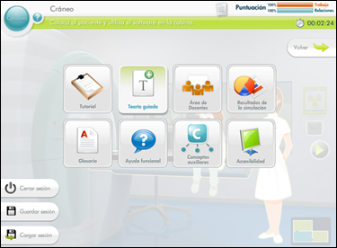

 |
|
Durante toda la simulación tendrás disponible un pequeño menú en la parte superior de la pantalla. El objeto de este menú es ayudarte y hacerte la "vida" más sencilla. Desde el mismo puedes acceder a varios temas desarrollados, conceptos y un glosario. Todos ellos son ayudas en formato de texto enriquecido, mediante los cuales puedes repasar conocimientos que te serán de máxima importancia durante la simulación. La mayoría son aspectos que ya conoces, pero siempre es bueno tenerlos a mano, ¿no crees?. |